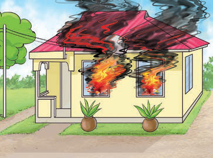
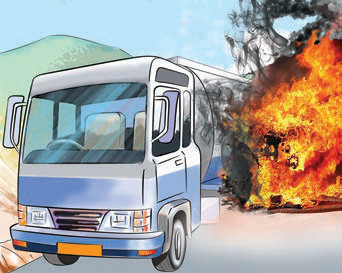

Hasara za kuungua kwa vitu
Uunguaji wa vitu huweza kusababisha hasara mbalimbali. Miongoni wa hasara hizo ni:
Uharibifu mkubwa wa mazingira kwa kuharibu uoto wa asili na makazi ya wanyama;
Mmomonyoko wa udongo na kupoteza rutuba ya ardhi Uchomaji wa misitu unaweza kusababisha;
Kuharibu majengo na vifaa mbalimbali vyenye thamani, na kusababisha upotevu mkubwa wa mali. Kielelezo namba 4 kinaonesha uunguaji wa vitu; na


Kielelezo namba 4: Uunguaji wa vitu
Kuungua kwa vitu kama vile mkaa na mafuta ya petroli, huchangia ongezeko la gesi chafuzi angani.
Kujilinda na kuungua
Kujilinda dhidi ya ajali zinazohusisha vitu vinavyoungua, kunahitaji mbinu mbalimbali za kimaandalizi na kiusalama. Zifuatazo ni mbinu ambazo zitakulinda wewe na wengine dhidi ya ajali zinazosababishwa na vitu vinavyoungua:
Hifadhi vizuri vifaa vinavyolipuka
Weka mbali na vyanzo vya joto na moto vitu vinavyoweza kulipuka (kama petroli, mafuta ya taa na kemikali);